Minimal Poster / Maximal Poster / Generative System
자신을 표현하고, 대표할 수 있는 야채를 택해 리서치한뒤 미니멀, 맥시멀 포스터
및 제너러현티브시스템을 구현. 신비롭고 투명한, 예쁜 자연물을 좋아하는 나를 ‘구스베리’라는
야채를 택해 나를 표현한다.
Minimal Poster_Gooseberry
Maximal Poster_Gooseberry
Generative System_Gooseberry
Poster, Moving Poster
Poster
Video, Book
첫번째 미니멀 포스터에서는 구스베리의 형태적 특징들(반투명해 내부 과육과 씨가 비치는,
줄무늬와 씨앗이 있는, 다채로운)을 표현하였다.
두번째 미니멀 포스터에서는 흐리멍텅하고 칙칙한 눈을 의미하는 ‘gooseberry eyes’를 표현하였다.
구스베리의 시각특징과 gooseberry eyes를 활용한 맥시멀 포스터.
많은 정보를 담을 수 있지만 너무 많은 정보를 담으면 오히려 전달에 방해가 될 수 있다는 트릭을 포함한다.
이 트릭을 바탕으로 시각-텍스트 정보 사이의 모순을 찾아내기 어려울 것이라고 가정 후 포스터를 디자인하였다.
또한 최대한 많은 툴을 이용해 툴에 있어서도 맥시멀을 나타낸다.
자신의 야채에 대한 시스템을 생성하고 이를 실행한다.
눈동자트래킹(eyetracking)을 통해 각자의 아이덴티티(eyedentity)를 부여하는 시스템을 제작하였고,
그 과정과 결과를 영상, 소책자로 담았다. 책의 부록으로 렌티큘러 카드가 있는데 평면에서도 3D 모션을 볼 수 있게 한다.
 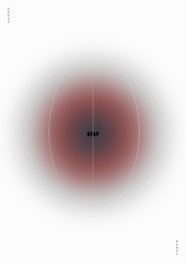
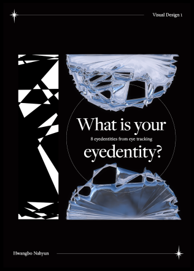
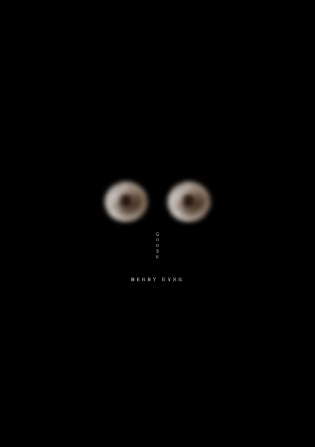
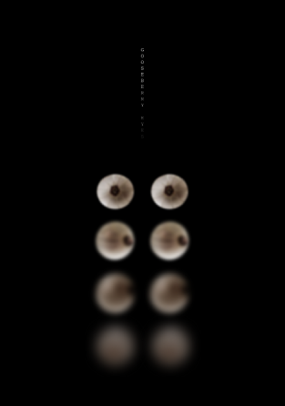
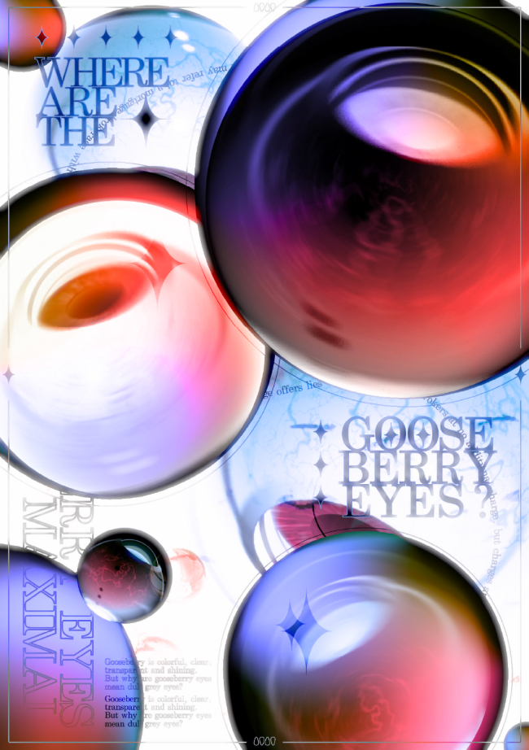
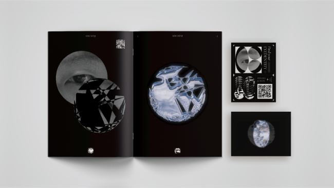
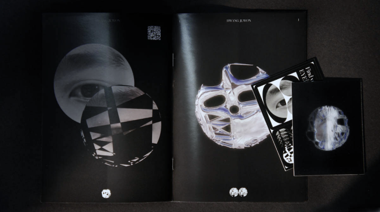
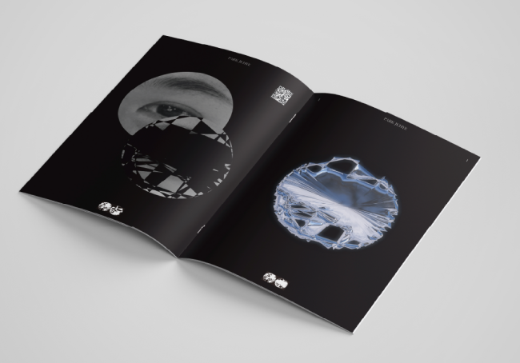
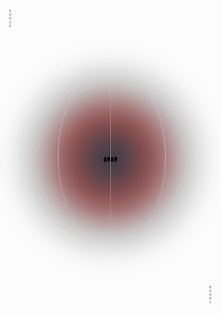
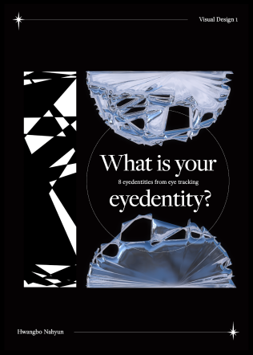
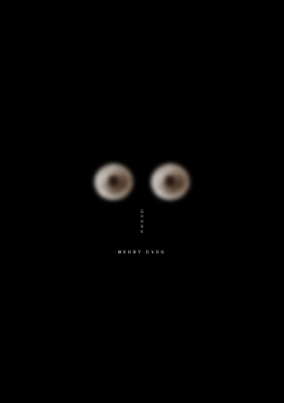
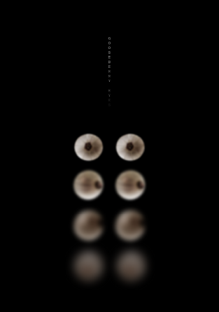
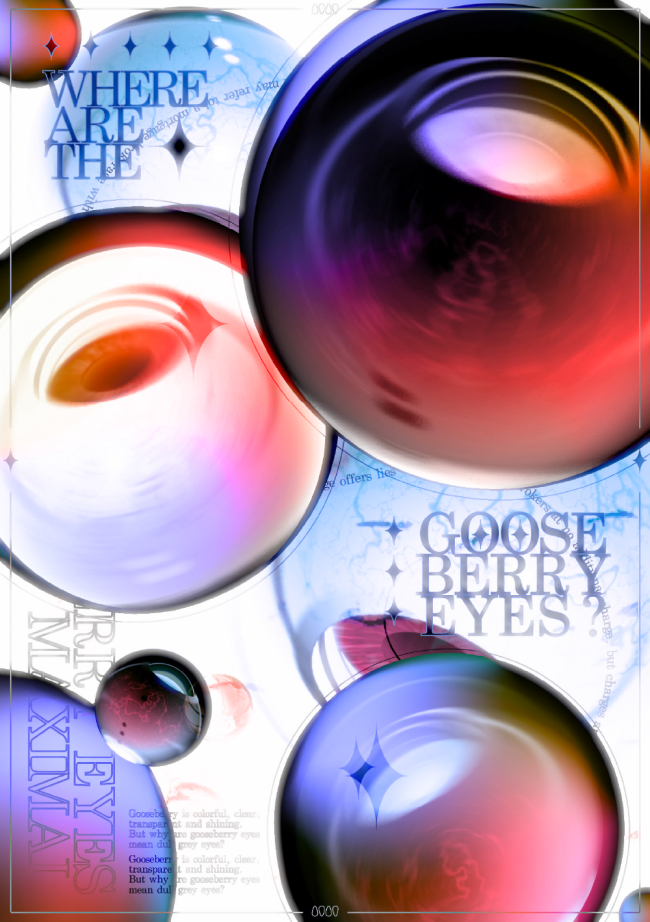
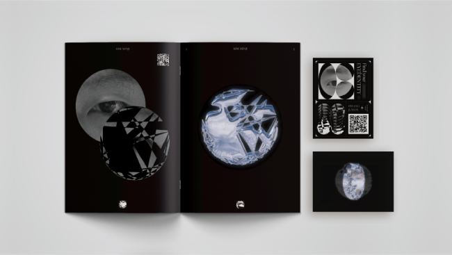
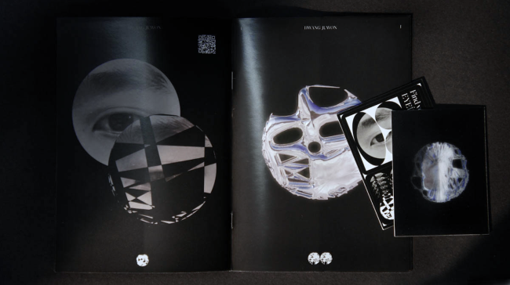
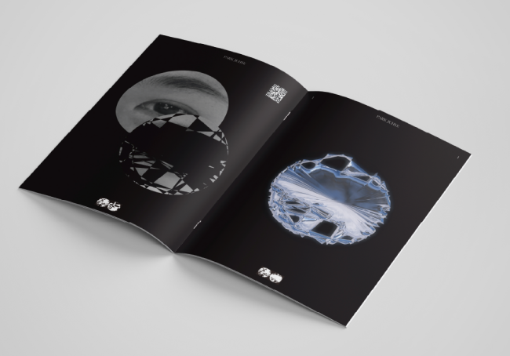
 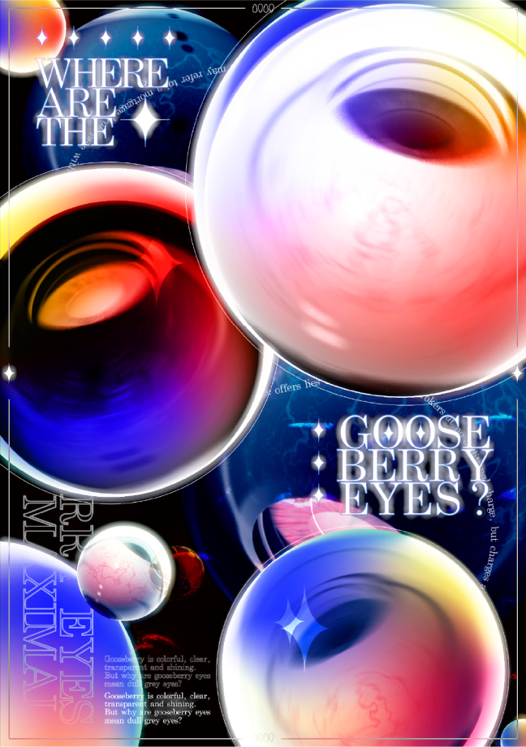
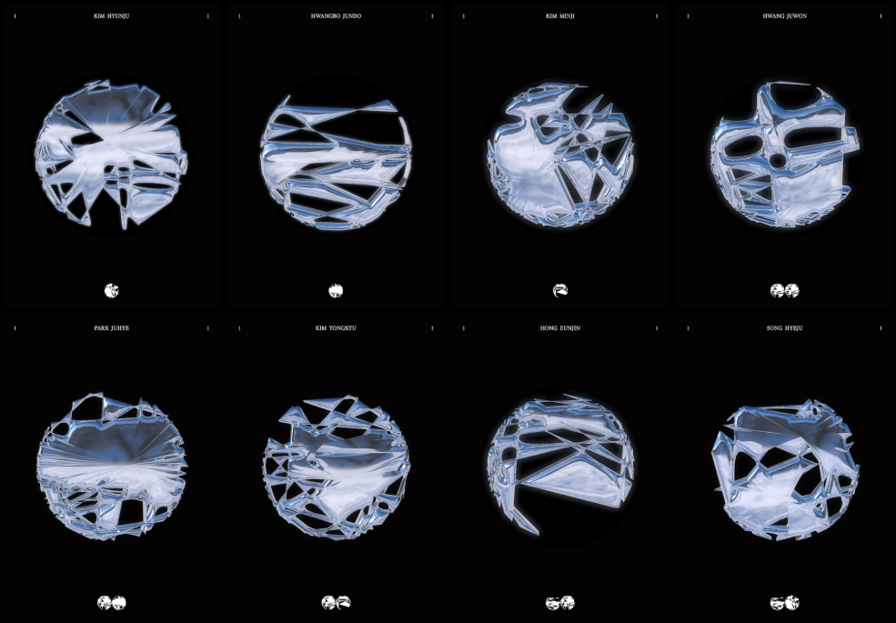
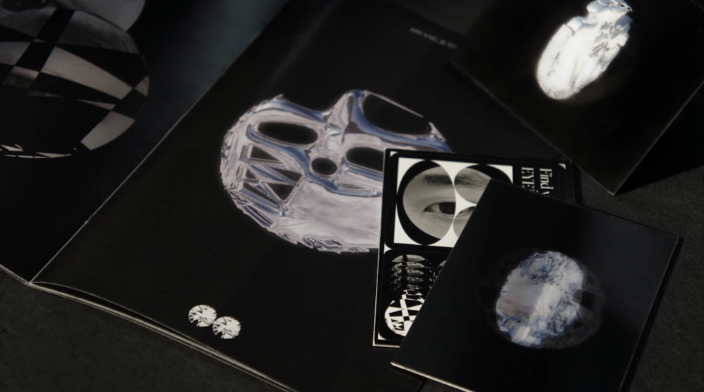
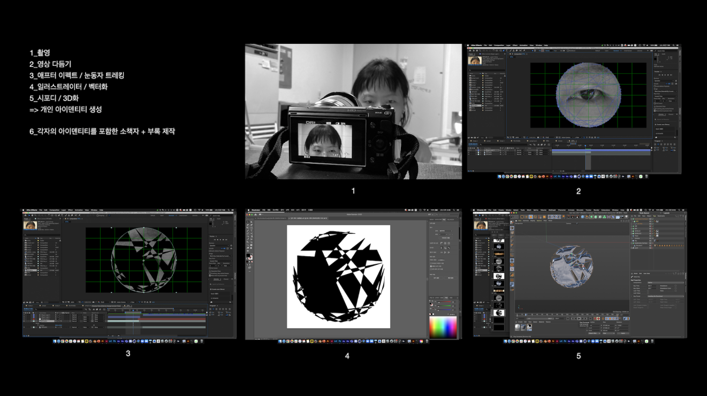
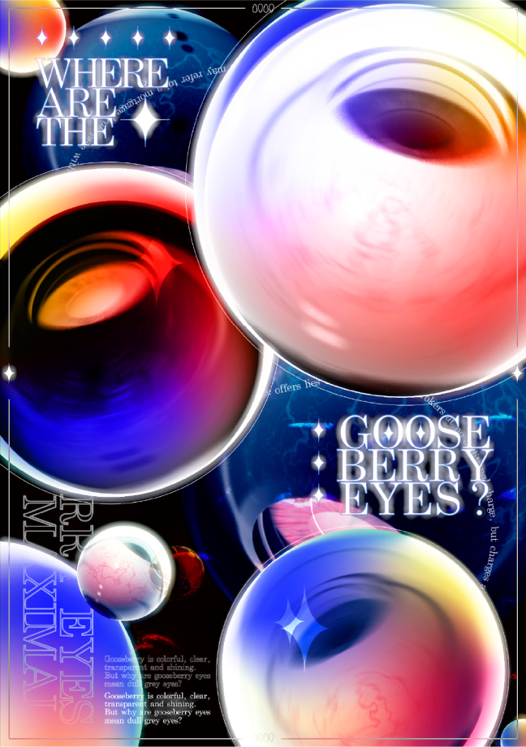
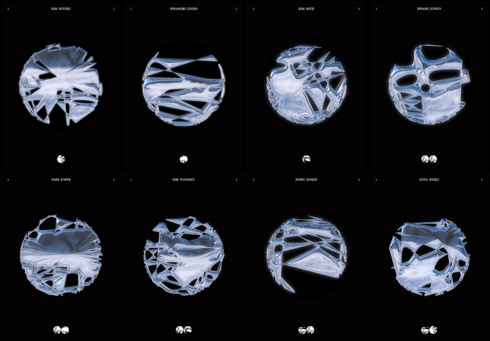
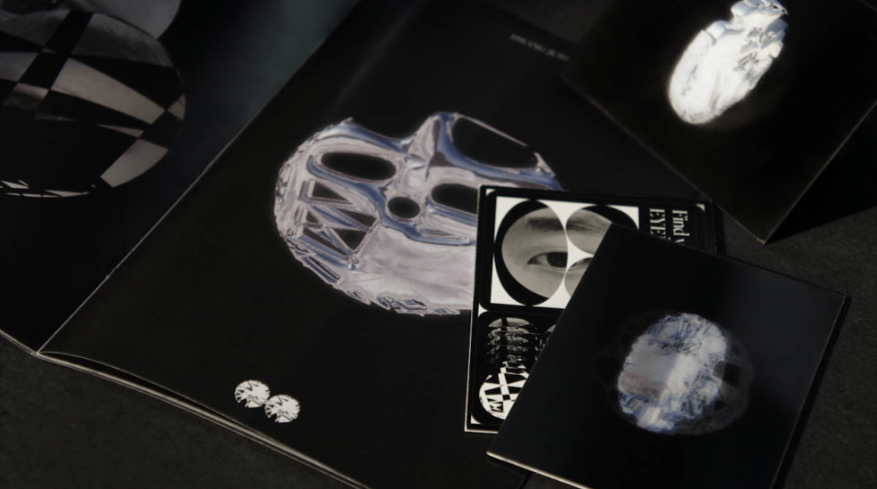
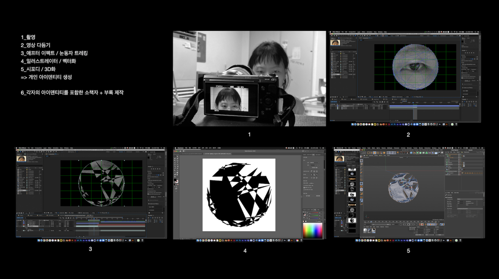